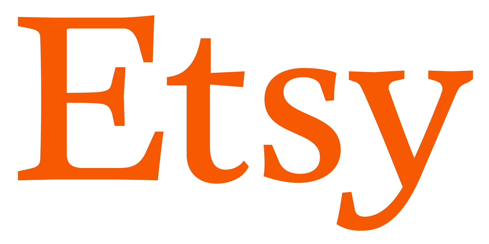
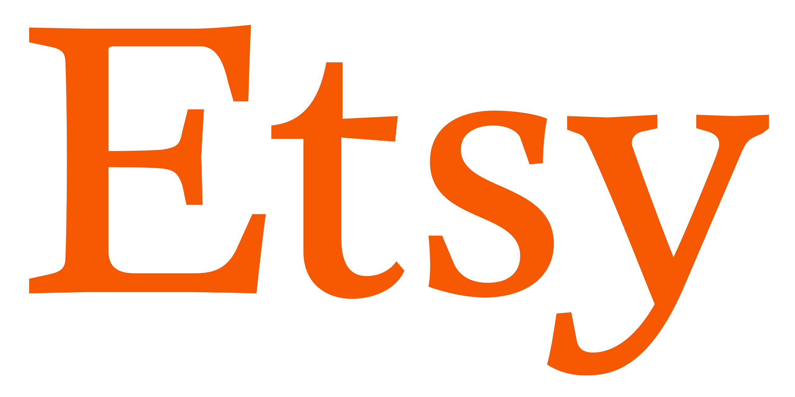

Pensado para las personas. Creado para la productividad.
Conecta con las personas adecuadas, encuentra lo que necesitas y automatiza todo lo demás. Así es como se trabaja en Slack, tu plataforma de productividad.
Conecta con las personas adecuadas, encuentra lo que necesitas y automatiza todo lo demás. Así es como se trabaja en Slack, tu plataforma de productividad.


 

Automate away routine tasks with the power of generative AI and simplify your workflow with all your favorite apps ready to go in Slack.
Más información sobre la plataforma de Slack
Slack te otorga la flexibilidad para trabajar cuando, donde y como tú quieras. Puedes chatear, enviar clips de audio y vídeo o unirte a una junta para discutir asuntos en directo.
Obtén más información acerca de la comunicación flexible

Los canales son el corazón de Slack. Son espacios organizados para todo el mundo que contienen todo lo necesario para trabajar. Los canales permiten conectarse entre departamentos, oficinas, zonas horarias e incluso con otras empresas.
Obtener más información sobre los canales
85%
de usuarios afirma que Slack ha mejorado la comunicación*
86%
creen que su capacidad para trabajar a distancia ha mejorado**
88%
se sienten más conectados con sus equipos*
“Muchos empleados del sector tecnológico estaban realizando una transición natural hacia Slack. Por lo tanto, seguimos los pasos de nuestros usuarios hacia lo que a día de hoy es una de nuestras herramientas más importantes”.
Matt Beal
Director de Estrategia y Arquitectura Tecnológica, Vodafone
Ver más casos de clientes ->
* Promedio ponderado. Basado en una encuesta de 2707 respuestas de usuarios semanales de Slack en Estados Unidos, Reino Unido, Australia y Canadá, con un margen de error de ± 2 % al 95 % CI (diciembre de 2021).
Funciones
EXAMINA LAS FUNCIONES ->